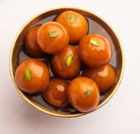
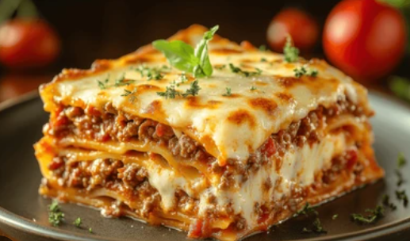
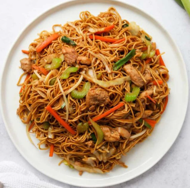

Gulab-Jammuns
Ingredients Needed:
- 1 cup grated cassava (gulba)
- 1/2 cup grated coconut (optional)
- 1/4 cup sugar
- 1/4 teaspoon salt
- 1 tablespoon ghee or melted butter
- Cardamom powder
- Chopped nuts or raisins
- Banana leaves or foil
Instructions
- Grate the cassava and squeeze excess water.
- Mix all ingredients thoroughly.
- Wrap in banana leaf or foil.
- Steam for 15–20 minutes.
Serving Tip: Garnish with nuts or honey. Serve with tea.

Lasagna
Ingredients Needed:
- 12 lasagna noodles
- 2 tbsp olive oil
- 1 chopped onion
- 2 cloves garlic
- 500g ground beef
- 2 cups tomato sauce
- 1 tsp oregano
- 2 cups mozzarella
- Salt & pepper
Instructions
- Cook noodles and set aside.
- Sauté onion, garlic, add beef and cook.
- Add sauce, season and simmer.
- Layer noodles, meat sauce, and cheese.
- Bake at 180°C for 30–35 mins.
Serving Tip: Let it rest for 10 minutes before cutting.

Chowmein
Ingredients Needed:
- 200g noodles
- 1 cup sliced cabbage
- 1 carrot, julienned
- 1 onion, sliced
- 2 tbsp soy sauce
- 1 tbsp vinegar
- 1 tsp chili sauce
- 2 tbsp oil
- Salt and pepper
Instructions
- Boil noodles, drain, and toss in oil.
- Sauté vegetables for 2–3 mins.
- Add sauces, stir in noodles, mix well.
- Stir-fry for 2–3 mins. Serve hot.
Serving Tip: Garnish with spring onions or sesame seeds.
